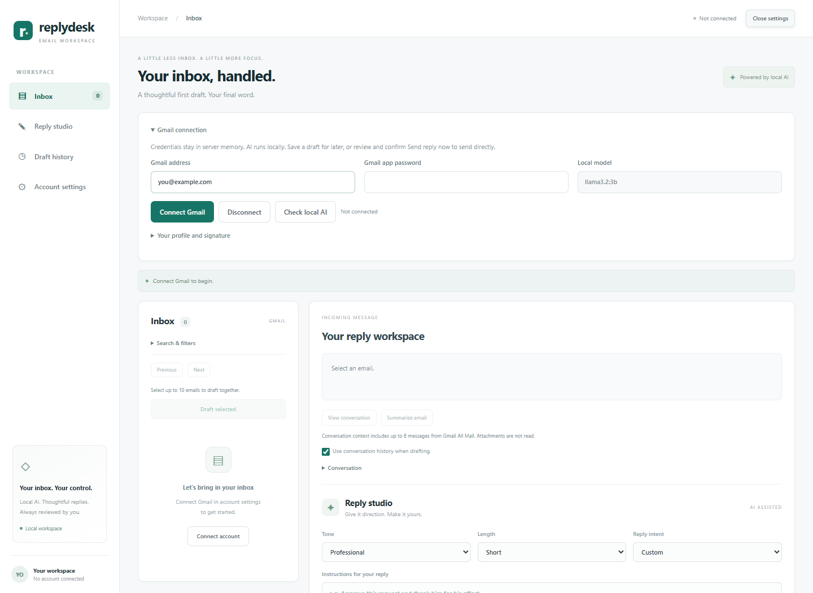
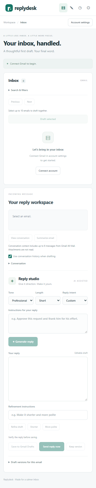

Interface screenshots
These screenshots were captured from the running React/FastAPI app in a fresh, unconnected browser session. The account-settings screenshot uses you@example.com; its password field is empty. No mailbox access or email sending was performed.
Desktop workspace
Sidebar navigation, the Inbox panel, and Reply studio with generation, refinement, draft saving, and sending controls. Empty-state controls are disabled until a message is selected.

Account settings
Open Account settings from the top bar or sidebar to connect Gmail and configure your profile and signature.

Mobile layout
At a 390-pixel viewport, navigation becomes compact and the inbox and reply editor stack vertically.

Refreshing screenshots
Build and start the app first. In frontend, install the optional capture dependency without changing the package manifest:
npm install --no-save --package-lock=false playwright
From the project root:
node tools/capture-screenshots.mjs
The script uses a fresh browser context and the installed Microsoft Edge executable on Windows. To choose another compatible browser executable, set DOCS_BROWSER_PATH for this command. It writes images to docs/images. Check every image for private information before committing it. The optional capture tool is not required to run the application; npm ci restores the normal frontend dependency set.